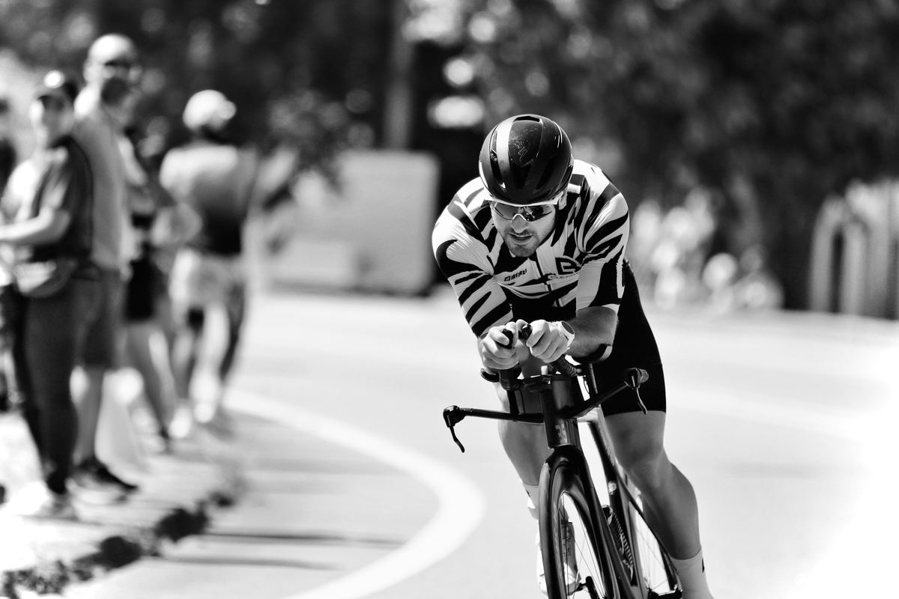
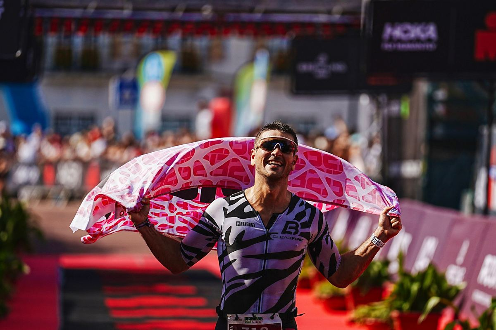
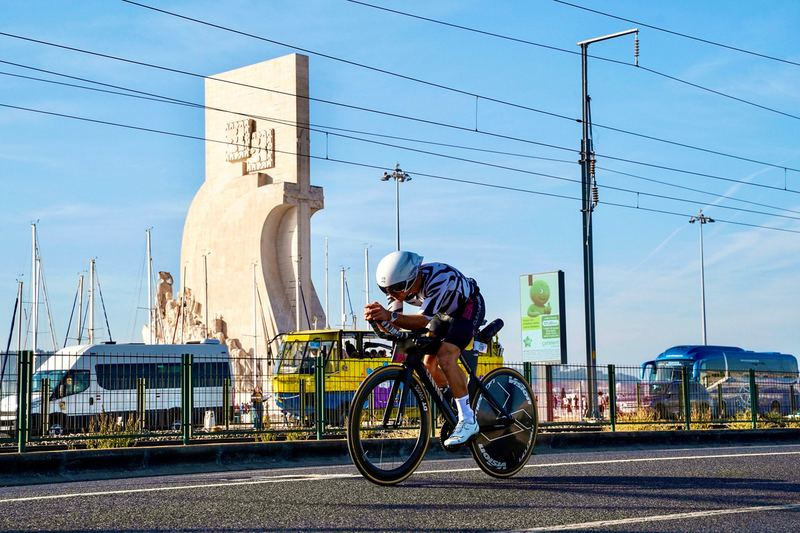
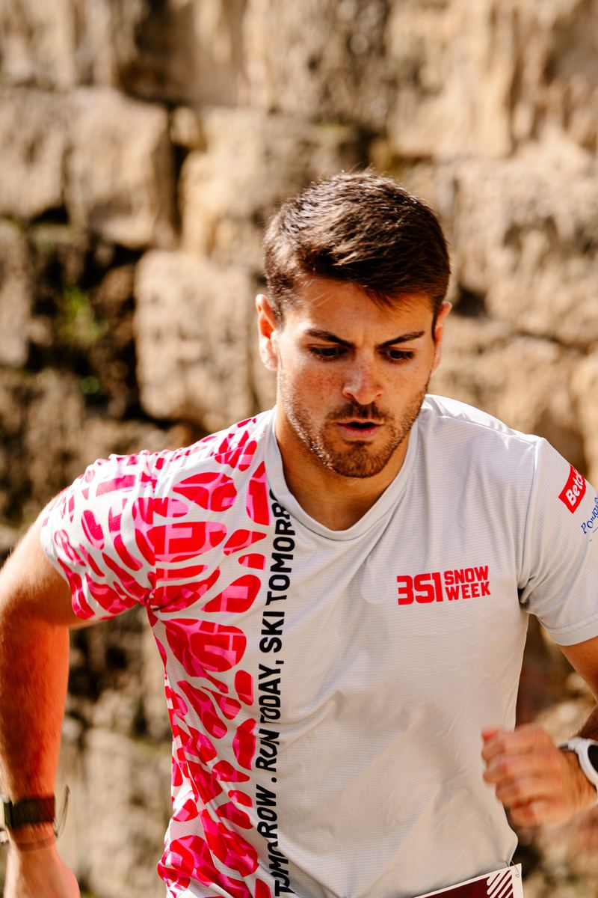
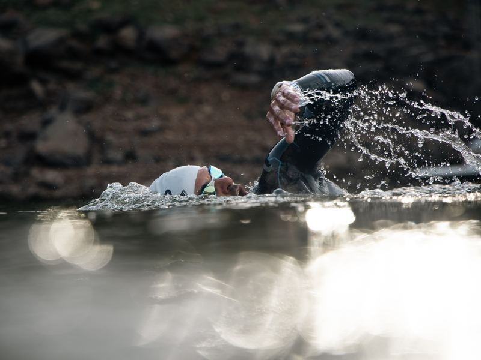
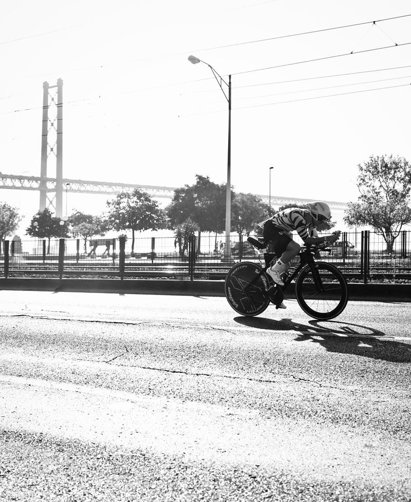
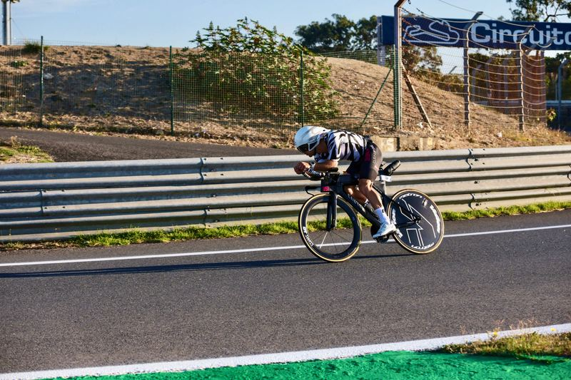

GonçaloCarmo
Triatleta · Lisboa
Road to Kona
Competi no motocross durante mais de dez anos. Em 2025 fiz o primeiro triatlo e em 2026 terminei o primeiro IRONMAN em 9h35. Em 2027 quero estar na partida do Campeonato do Mundo, em Kona.
- IRONMAN
- 9:35CAS 26
- Maratona
- 2:44SEV 26
- Meia distância
- 4:26SET 26
- Escalão
- 1.ºSIN 26
- Kona · 9 out. 2027
- 352dias
Porquê agora
Do primeiro triatlo
ao IRONMAN
em 17 meses.
Em maio de 2025 fiz o primeiro triatlo, em Caminha. Em outubro de 2026 terminei o IRONMAN Portugal-Cascais em 9h35. O passo seguinte é a qualificação para Kona. Patrocinar agora é entrar com preços de primeira época num atleta que este ano ficou no top 3% em Setúbal, em Sines e no IRONMAN Cascais.
Primeiro triatlo e primeiro 70.3.
4.º do escalão na estreia, em Caminha. Em outubro, 4:27 no IRONMAN 70.3 Cascais, 31.º entre 2 353 atletas.
Vitória de escalão e IRONMAN em 9:35.
1.º do escalão em Sines, 2.º em Setúbal, 2:44 na Maratona de Sevilha e 9:35:08 no IRONMAN Portugal-Cascais.
Qualificação para Kona.
Uma prova full distance para garantir o lugar e a partida do Campeonato do Mundo IRONMAN a 9 de outubro de 2027.

01 · História
Dos circuitos de motocross
às linhas de chegada
Comecei a competir no motocross aos nove anos e corri mais de uma década nos campeonatos nacionais de Portugal e Espanha. Foi aí que aprendi a treinar com método e a perceber que uma corrida se decide nos detalhes.
Deixei a mota em 2021. Em 2025 experimentei o triatlo e percebi depressa que a bicicleta e a corrida me saíam naturalmente, provavelmente por causa dos anos de motocross.
Hoje treino com a LB Squad Portugal, duas vezes por dia e perto de 21 horas por semana. No motocross os patrocinadores sempre fizeram parte da equipa, e é assim que quero trabalhar no triatlo.




Natação · 3,8 km
A baía de Kailua.
Em Kona nada-se no oceano e sem fato de neoprene. É cerca de uma hora até à primeira transição.
Ciclismo · 180 km
A Queen Kaʻahumanu Highway.
Cinco horas entre campos de lava e vento lateral. É o segmento em que o fato passa mais tempo à frente das câmaras. Em Cascais demorei 4h56.
Corrida · 42,2 km
Aliʻi Drive e Energy Lab.
Uma maratona ao calor depois de 180 km de bicicleta. Em Cascais corri-a em 3h27.
Meta · Aliʻi Drive
A fotografia da meta.
É a imagem que fica de cada prova e a mais partilhada. Os logótipos do fato aparecem nela.
02 · Resultados
Palmarés
Resultados oficiais de 2025 e 2026. Cada meia distância foi mais rápida do que a anterior, e o primeiro IRONMAN ficou abaixo das dez horas.
IRONMAN Portugal-Cascais 2026 · 9:35:08
Primeiro IRONMANTempo por segmento nos 226 km. Mais de metade da prova foi passada na bicicleta.
Fonte: cronometragem oficial IRONMAN.
Meia distância: tempo final
1,9 km a nadar, 90 km de bicicleta e 21,1 km a correr. Quanto mais baixo, melhor.
Ver tabela
Fonte: classificações oficiais. Os percursos são diferentes e não são diretamente comparáveis.
Lugar na geral, em percentagem do pelotão
Quanto mais à esquerda, melhor.
Ver tabela
03 · Telemetria
Os dados de treino
Todos os treinos ficam registados no Strava, com distância, tempo e desnível. Os patrocinadores podem acompanhar o volume de treino semana a semana.
Últimos 12 meses no Strava
Ver tabela
Perfil no Strava
Natação, bicicleta e corrida, com distância, ritmo e desnível de cada sessão.
04 · Objetivos
A época
2027
Sete provas em três países, com a distância a aumentar ao longo do ano até ao Campeonato do Mundo. As provas IRONMAN têm transmissão em direto e fotógrafos oficiais, e cada uma dá conteúdo para as semanas antes e depois.
Datas oficiais a 22 de outubro de 2026. A prova full distance de qualificação ainda está por escolher.
05 · Patrocínio
O teu logo
no meu fato.
O fato que vou usar em todas as provas e treinos de 2027 tem 20 espaços para marcas. Podes rodar o modelo, escolher um espaço, experimentar o teu logótipo e enviar o pedido de reserva.
- Espaços
- 20
- Desde
- 60 €
- Top spot
- 600 €
- Fato completo
- 3000 €
Toca num espaço do fato ou numa linha da tabela.
Cada espaço mostra o tamanho real, o preço da época e onde fica visível: na bicicleta, na corrida, na meta e nas redes.
Peito
PNG, JPG, WebP ou SVG até 5 MB. O ficheiro não sai do teu dispositivo.
O fato completo
Os 20 espaços, o nome da marca associado ao meu em toda a comunicação e exclusividade no teu setor durante a época 2027.
Tabela de preços
Incluído
- Logótipo no fato em todas as provas e treinos de 2027
- Logótipo e link nesta página
- Identificação nas publicações de cada prova
Presença regular
- Publicação de apresentação e story no Instagram
- Fotografias de treino com o logótipo, para as redes da marca
- Relatório a meio e no fim da época, com resultados e alcance
Parceiro principal
- Uma publicação ou reel dedicado por trimestre
- Logótipo no equipamento de treino
- Preferência na renovação para 2028
Nome associado
- «Gonçalo Carmo × Marca» na bio, no media kit e na imprensa
- Exclusividade de setor e conteúdo dedicado todos os meses
- Uma presença por época num evento da marca
Escolhe
Seleciona um ou vários espaços. A partir de três, o pacote tem 10% de desconto.
Envia o pedido
Por WhatsApp, email ou Instagram, com a mensagem já preenchida.
Confirmação
Respondo em 48 horas com a proposta e a fatura e reservo o espaço.
Em prova
O logótipo entra no fato antes da primeira prova da época.
06 · Media
Partilhar
o percurso
Publico treinos, provas e o dia a dia da preparação, com vídeo quase diário e métricas reais. Uma marca parceira aparece ao longo da época inteira, nos treinos e nas provas.
- Seguidores no Instagram
- 1 921
- Interações por publicação
- ~370
- Taxa de interação
- 19%
- Melhor publicação
- 881gostos
Gostos e comentários a dividir pelos seguidores. Média das 12 publicações mais recentes de @goncalo.carmo99, outubro de 2026.







07 · Apoiar
Kona
Crew
Também podes apoiar a título individual. As contribuições ajudam a pagar inscrições, viagens e material até à partida em Kona.
Para onde vai o apoio
Orçamento estimado da época 2027, em euros.
Estimativa. As inscrições usam os preços oficiais publicados em outubro de 2026. Viagens e material são valores de referência.
08 · Contacto
Contactos
Patrocínios, parcerias e imprensa.